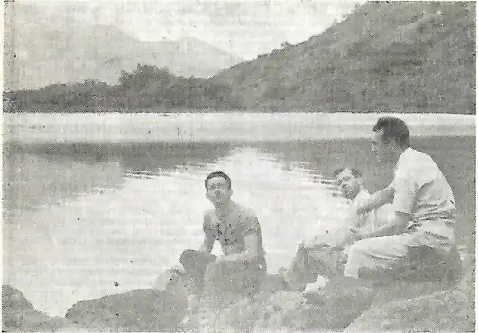

«Лимите» (Limite): фрагменты сценария
Перевод с португальского. Страницы 13–16 журнала Cine Clube. Англоязычные обозначения крупности планов переданы русскими терминами.
1
Крупный план — рот Женщины 1 слегка отдаляется; она поворачивает лицо и смотрит на Мужчину 1: он только что закончил есть и сидит ссутулившись, подавленный. (Остаток сцены снят из-за спины Мужчины 1.)
Наплыв. Крупный план — волосы Женщины 1 анфас.
Наплыв (камера немного сверху) — вода и борт лодки.
Наплыв (тот же план, что и в предыдущей сцене) — тюремная решётка и лицо Женщины 1 за ней. Камера идёт влево к двери и достигает крупного плана замка; затем опускается к полу — в кадр входят ноги мужчины. Дверь прикрыта. Камера отъезжает, всё время удерживая в кадре нижнюю часть двери, и ждёт.
Общий план — дверь открывается; выходят ноги Женщины 1. Она поправляет платье; следом выходят ноги тюремщика. Женщина собирается уйти, но её удерживают. (Сцена снята от ступней до пояса.)
От общего к крупному плану — руки мужчины удерживают женщину за руку. Пауза. После нескольких попыток женщина вырывается. (Панорама вслед уходящей женщине; в глубине видны пустые решётки; камера наезжает на них.)
План — Женщина 1 идёт по тротуару.
План — Женщина 1 идёт по улице.
Тревеллинг — мимо проходят края крыш.
Наплыв — мимо проходят кроны деревьев.
Наплыв. План — женщина стоит на дороге; снимает шляпу, открывает сумочку, вытирает платком пот. (Камера идёт вокруг неё и совершает полный круг, возвращаясь в исходное положение.) Женщина идёт со шляпой в руке; камера сопровождает её. Внезапно женщина выходит из поля объектива; камера продолжает двигаться по пустой дороге, поворачивает влево и всё время держит в кадре дорогу, теперь сбоку, и выгоревшую полосу земли. Камера останавливается, проходит обратный путь и достигает перекладины простой деревенской калитки. Женщина сидит на одной из перекладин, обессиленная. Камера приближается к Женщине 1 и некоторое время удерживает её в кадре.
Наплыв — колесо поезда начинает вращаться.
Наплыв — вращается колесо швейной машины. (Наложение с тревеллингом к запотевшему окну.)
План — сквозь окно, сверху: Женщина 1 за швейной машиной.
Женщина шьёт.
Крупный план — игла машины и обрабатываемая ткань.
Крупный план — Женщина 1 перестаёт шить, поправляет волосы и нить на катушке, смотрит в окно.
План — окно; снаружи — крыши и небо.
Наплывы — последовательные наплывы: штопальное яйцо; катушка; прижимные лапки; пуговица; сантиметровая лента; ножницы.
Крупный план — женщина выходит из задумчивости и снова начинает шить.
План — сквозь окно, сверху, снаружи внутрь: Женщина 1 шьёт на машине. Закончив, берёт ножницы и вырезает из обрабатываемой ткани несколько лоскутков; затем некоторое время смотрит на ножницы в руке.
Очень крупный план — раскрытые ножницы в руке. Женщина проводит пальцем по режущей кромке одного из лезвий, словно пробуя её.
Очень крупный план — лезвие раскрытых ножниц.
Наплыв — повёрнутая ребром газетная страница, подобная режущей кромке ножниц.
План — ноги Женщины 1 у двери дома. Камера поднимается, а затем крупно показывает оборот газеты, которую читает Женщина 1. Можно прочесть: «Побег из тюрьмы — при содействии тюремщика» и т. п. Женщина переворачивает газету (понятно, что сейчас она найдёт заметку). Камера опускается к ногам Женщины 1 и проходит между ними; видно, что на чулке спустилась петля сверху вниз.
План — крыша дома; на ней съёжившийся урубу; серое небо.
План — тротуар. Ветер гонит по земле сухие листья, чью-то шляпу и газету.
План — открытая дверь дома Женщины 1 хлопает на ветру. Видны взметающиеся пыль и сор.
Наплыв — быстро вращающееся колесо поезда, снятое с двух ракурсов.
Наплыв. Крупный план — в лодке: лицо Женщины 1, только что закончившей говорить; она смотрит на Мужчину 1, находящегося вне поля объектива.
Общий план — Мужчина 1, перегнувшись через борт лодки, слегка трёт друг о друга две щепки, которые держит в руке.
Крупный план — рука Мужчины 1 и две щепки, которые он трёт друг о друга; внизу видны море и часть борта лодки.
2. Счастливое время
Долгая сцена.
- Мужчина с двумя щепками в руке.
- Крупный план — рука и щепки.
- Дальний план — язык суши; едва различимая пара идёт в глубину кадра. Наложение на предыдущий крупный план, который почти не исчезает до конца.
- Средний план — идущая пара, снятая от пояса вниз.
- Крупный план — их переплетённые руки на фоне бескрайнего неба.
- Часть ствола, снятая снизу вверх и пересекающая кадр.
- Общий план — тот же ствол, снятый сверху вниз; в глубине спокойно течёт вода, видна земля.
- Отражение ажурной кроны деревьев в стоячей воде. Общий план.
- Пара купается; видны только ноги.
- Доски на фоне красивого неба.
- Кокосовая пальма.
- Столб.
- Дерево; внизу кадра — узкая полоса поля.
- Ветка с растениями-паразитами.
- Почти засохшая ветка; на ней растут лишь несколько прутиков.
- Совершенно сухое дерево без ветвей.
- Поле и пара, снятые с близкого расстояния.
- Поле и пара, снятые издали.
- Руина; между камнями пробиваются растения.
- Разрушенная аркада.
- Кактусы на песке.
Мрачное время
Короткая сцена. Все ракурсы в точности повторяются; изменилось лишь небо, а одно из деревьев упало. Ветер.
- Мужчина с двумя щепками в руке; волосы развеваются на ветру.
- Крупный план — рука и щепки, неподвижные.
- Дальний план — пустой язык суши.
- Наложение. Следы пары, отпечатавшиеся на песке. Камера медленно движется сверху вниз, следуя за ними.
- Крупный план — один из следов, намеренно изолированный. В глубине — гребень тихой волны, набегающей на берег (негатив).
- Крупный план — часть ствола, снятая сверху вниз (негатив).
- Общий план — тот же ствол, снятый сверху вниз; в глубине спокойно течёт вода, видна земля (негатив).
- Общий план — отражение кроны в воде дрожит.
- Купание пары; на этот раз видны только их спины.
- Доски на фоне мрачного неба (негатив).
- Кокосовая пальма (негатив).
- Столб (негатив).
- Дерево; внизу кадра — узкая полоса поля. Дерево повалено; небо мрачное.
- Ветка с растениями-паразитами; мрачное небо.
- Почти засохшая ветка; на ней растут лишь несколько прутиков; мрачное небо.
- Совершенно сухое дерево без ветвей; чёрное небо.
- Пустое поле издали; ветер колышет высокую траву.
- Пустое поле вблизи; ветер колышет траву сильнее.
- Руина; между камнями пробивается растение; чёрное небо.
- Разрушенная аркада; чёрное небо.
- Кактусы на песке; в этом плане их тон ещё более выжженный.
3. Ритм источника
Склейка. Крупный план — желобчатая черепица на старой колониальной крыше. Камера находится на уровне черепицы; фокус переходит от одного её края к другому, уходящему в глубину кадра. Камера замирает в наклоне и охватывает всю крышу: бесконечные ряды черепицы словно сцеплены друг с другом. Камера смещается вправо, к скату крыши; в поле объектива входят улица внизу, остальная часть квартала и фрагменты дальней деревенской панорамы. Камера качается влево — это настоящее маятниковое движение, — вновь захватывает центр уже показанной крыши, а затем её левый скат. В поле объектива открывается новый вид деревни: дома и маленькие улицы. Камера трижды качается туда и обратно одним и тем же движением и наконец останавливается на очень крупном плане первой показанной черепицы.
Склейка. Общий план. Камера низко, направлена снизу вверх — старый источник, сложенный из тесаного камня; из него непрерывно течёт тонкая струя прозрачной воды. Камера несколько секунд остаётся неподвижной, затем чрезвычайно быстро наезжает и берёт крупным планом отверстие, из которого вырывается вода. Останавливается.
Склейка. Общий план. Камера низко — старый общественный фонтан, который жители превратили в каменную прачечную. Спиной к камере прачка в старой соломенной шляпе полощет одежду и складывает выжатые вещи в жестяной таз на широком бортике бассейна. Камера медленно панорамирует в противоположную сторону, захватывая протяжённый отрезок скромной деревенской улицы. На первом плане, в начале улочки, в поле объектива входит боковая стена маленького колониального каменного моста со сводчатой аркой. По мосту ходят гуси. Они чистят перья клювами. Дальше мальчик, сидя на развалившемся бордюре, лениво играет бамбуковой палочкой. Так панорама камеры охватывает всё описанное.
Склейка. Общий план. Камера низко, направлена снизу вверх — тот же ракурс маленького источника со струёй, описанного в предыдущем плане. Камера лишь дважды подряд чрезвычайно быстро наезжает на струю воды, каждый раз беря её крупным планом. Приближается и останавливается.
Склейка. Общий план. Камера низко — сквозь концы дощатого настила виден Мужчина 1, идущий к камере. Когда его грудь полностью закрывает поле объектива, камера поднимается наклоном — видно проходящее небо, — а затем опускается; в кадр снова входят концы досок. Камера снимает Мужчину 1 со спины: он удаляется в глубину кадра, пока не оказывается на общем плане.
Склейка. Общий план — панорамный тревеллинг; камера на обычной высоте. Тот же участок земли; перед объективом неясно проходят растения. Продолжительность плана та же.

Во время съёмок «Лимите»: справа — Руй Коста, в центре — Эдгар Бразил.